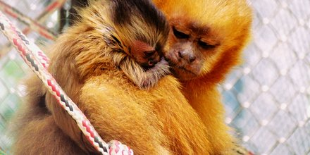

Macaco-Prego-Galego
O macaco-prego-galego é uma espécie de mamífero nativo do Brasil
e a principal causa para sua extinção
está
relacionada à ação humana, como o desmatamento, poluição e expansão
urbana em áreas de mata.
...
Estima-se que existem aproximadamente mil indivíduos que estão espalhados pelo bioma da Mata Atlântica.
De
acordo com o Instituto Chico Mendes de Conservação da Biodiversidade (ICMBio), a população da espécie
já
diminuiu
cerca de 50% desde quando foi descrita, há aproximadamente 10 anos.